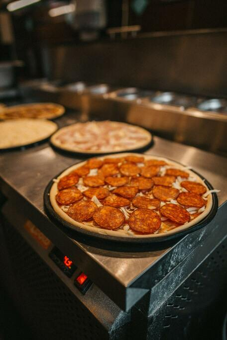

Pepperoni Pizza Recipe

Description
Pepperoni pizza is classic pizza that everyone loves! It's so simple yet very delicious.
Don't be afraid to experiment with your pizza! Add whatever toppings you want to it
Learn how to make a simple pepperoni pizza today!
Ingredients
- 16 ounces pizza dough, store-bought or homemade
- 1/2 cup pizza sauce
- 18 to 20 slices of pepperoni
- 12 ounces mozzarella cheese, grated
- 1/2 teaspoon ground black pepper
- 1 teaspoon oregano (optional)
- Flour for rolling and shaping dough
For the Pizza Sauce
- 1/2 cup tomato sauce (no salt)
- 1/2 teaspoon kosher salt
- 1/2 teaspoon ground black pepper
- 1/2 teaspoon granulated garlic
- 1/2 teaspoon granulated onion
- 1/4 red pepper flakes
- 1 teaspoon olive oil
Pizza Crust
- 3 ¼ cups all-purpose flour, or more as needed
- 2 (.25 ounce) envelopes FLEISCHMANN'S® Pizza Crust Yeast or RapidRise® Yeast
- 1 tablespoon sugar
- 1 ½ teaspoons salt
- 1 ⅓ cups very warm water (120 degrees F to 130 degrees F)
- ⅓ cup oil
Toppings
- 1 cup shredded mozzarella cheese, or more to taste
- 1 (6 ounce) package HORMEL® Pepperoni
Steps
- Preheat the oven to 425 degrees F (220 degrees C). Grease two 12-inch pizza pans.
- Make sauce: Whisk together water, tomato paste, oregano, basil, garlic powder, onion powder,
sugar, salt, and pepper in a medium bowl until smooth. Set aside.
- Make crust: Combine 2 cups flour, yeast, sugar, and salt in a large bowl. Add warm water and oil;
mix until well blended, about 1 minute. Gradually add remaining flour,
a little at a time, until a soft, sticky dough forms.
- Transfer dough to a floured surface; knead until dough is smooth and elastic, about 4 minutes. Add more flour as needed.
(If using RapidRise yeast, let dough rest, covered, for 10 minutes.)
- Divide dough in half. Lightly flour your hands, then pat each piece of dough onto the prepared pizza pans.
- Top dough with sauce, cheese, and pepperoni.
- Bake in the preheated oven until crusts are browned and cheese is bubbly, 18 to 20 minutes. Rotate pizza pans between
the top and bottom oven racks halfway through baking.